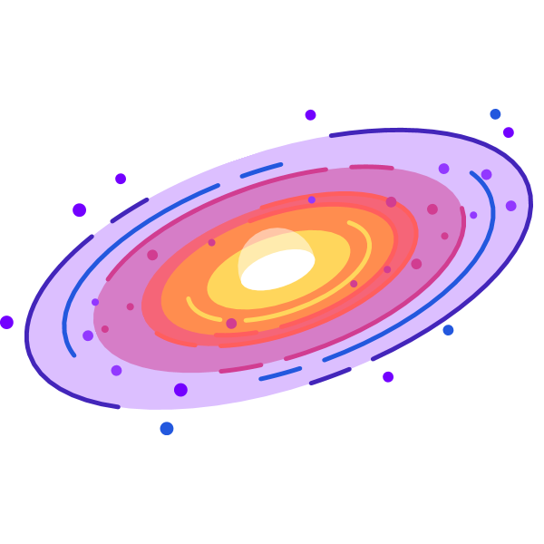

At 00:38 UTC, the Earth will reach perihelion—the point on its orbit closest to the Sun.
The first major meteor shower of 2024, the Quadrantids, peaks on the night of January 3 and the early morning hours of January 4.
A New Moon in the sky means no moonlight to hinder your view of stars and planets. Use our Interactive Night Sky Map to find out what planets are visible tonight and where.
This might be a good time to try and spot Mercury: the planet appears at its farthest distance from the Sun in the morning sky.